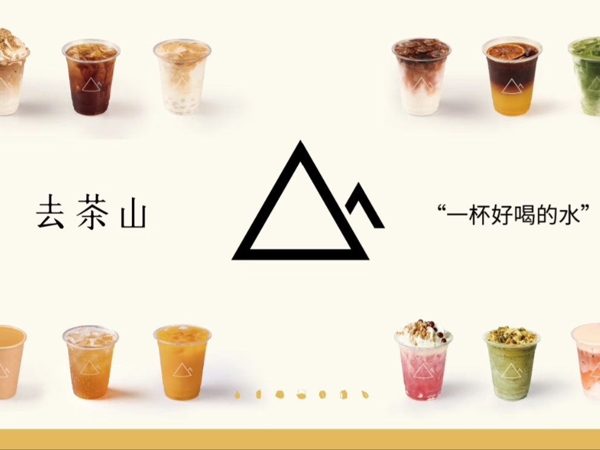
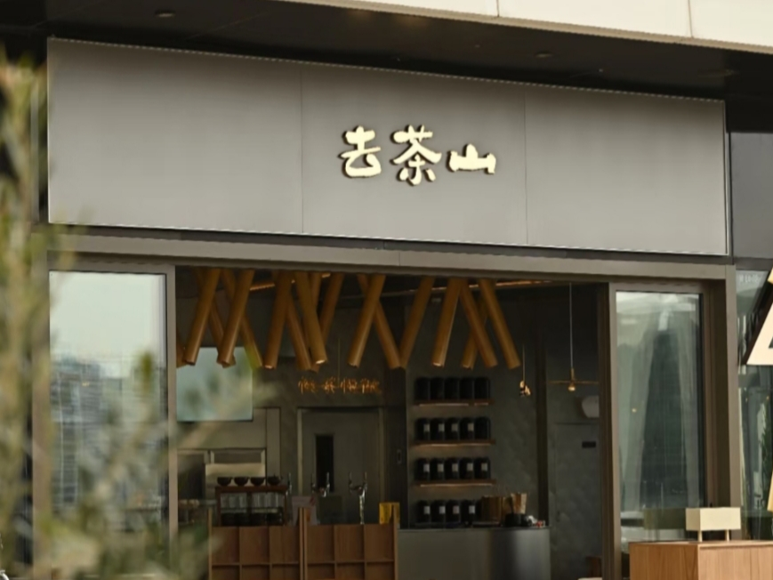

“原产万物，万物稀奇”
去茶山是一个起源于2000年的贵州本土茶饮品牌，隶属于贵阳唐茶会餐饮管理有限公司。我们致力于用新式茶饮焕发贵州产地原料的新活力，倡导自然、质朴和生命力。品牌使用贵州当地的特色原料，如刺梨和糯米，茶叶也选自贵州当地的茶园。其产品种类丰富，包括茶饮、咖啡、茶食小点等，特色产品有干酪普洱鲜奶茶、茉莉白桃、香禾糯糯普洱鲜奶茶、贵州铜仁抹茶鲜奶茶、贵州刺梨普洱茶、冰旋系列、咖啡系列、气泡嗨系列和酸奶系列等。去茶山在西南三省拥有16家门店，并在2024年扩展到成都、重庆、深圳和上海，门店数量超过30家。品牌在社交媒体上受到广泛关注，成为传播贵州文化的重要窗口，目前门店63家。
只为了"做一杯好喝的水"
1、去茶山为了覆盖更多用户客群，打造更为舒适的市民空间，形成了多至8条产品线。同时在菜单中加入丰富的本地特色风味，采用多种源自贵州本土的原料。"喝不惯可以换，请给贵州刺梨一个机会。"我们在门店及小程序均诚恳备注，给予顾客试错机会。
2、超大门店面积-城市生活空间，满足顾客需求将自然带回城市，不仅仅通过产品。去茶山的店面多以原木色、暖色为主，藤编竹椅、竹编屏风等大量具有地方特色和自然特质的风物做装饰，配合山间鸟鸣做背景音，想要在城市里为顾客提供一个自然角落。
贵阳手札系列——暖雾之息，冬韵之味
贵阳市文化和旅游局×去茶山联合打造《贵阳手札》系列专栏，旨在从一杯水里读懂城市。贵阳的冬天，有一个关键词：“康养”。康四时之序，养身心之常；康地脉之蕴，养心气之藏。这份独特的“康养”气质，植根于土地，它让身体得以休憩，让生命节奏得以内化。去茶山将这份风土智慧凝于一杯，便是希望它成为一个温和的提醒:在匆忙的世界里，我们依然可以效法自然，为白己留一段"冬蕴"时光，为下一次绽放，积蓄本真的力量。